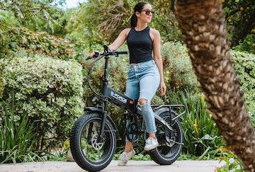
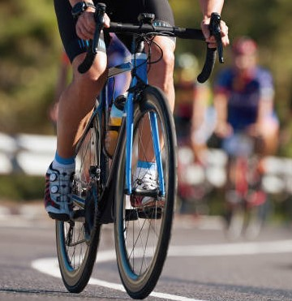

Contacta con BIK-bicicletas para mayo informacion
Quienes Somos
Una empresa de servicios para atender las diferentes necesidades de las personas que quieren practicar el deporte de la bicicleta
Tipos de Bicicleta
Bicicleta de Montaña

¿Qué características debe tener una buena bicicleta de montaña?
Son bicicleta que, o bien carecen de suspensión o tienen un sistema de amortiguación delantera en la
horquilla.
Normalmente el recorrido de esta suspensión es de menos de 120mm, ya que están pensadas para rodar a
toda velocidad por pistas y tramos sin asfaltar sin grandes desniveles ni obstáculos pronunciados.
Bicicleta de Gimnasio
¿Qué características debe tener una bicicleta spinning?
La bici de spinning debe ser resistente y estable ya que debe soportar el peso del usuario haciendo fuerza tanto sobre los pedales como sobre el manillar.
La rueda de inercia tiene que ser de más de 18Kg para tener un pedaleo suave, seguro y eficiente.
Existen dos tipos de resistencia, magnética o de freno por zapatas
Bicicleta de Gravel
La característica más notable de las Gravel son las cubiertas, que son de hasta 45 mm de ancho, pero que no presentan un perfil rugoso típico.
La creciente oferta de cubiertas anchas pero rápidas es un factor clave para el éxito continuo de las Gravel bikes.
El gravel es una modalidad de ciclismo que se práctica sobre una bicicleta que se parece en su geometría a las bicis de carretera de gran fondo, también con manillar curvo, pero con el cuadro y las ruedas adaptadas para poder ser utilizadas también fuera del asfalto.
Por otro lado las gravel se caracterizan por tener rodados 700c (28) con cubiertas variadas que van desde los 700x35 a los 700x40 dependiendo el tipo de terreno en el que se le de uso.
Bicicleta Electrica

La 'bici' eléctrica es un vehículo que lleva incorporado una batería que es capaz de almacenar la energía, y que suele estar hecha de plomo, de níquel e hidruro metálico, o de ion-litio.
En promedio, permite una autonomía de alrededor de 30 kilómetros hasta tener que volver a recargarse de nuevo.
Además de hacer muchos km en poco tiempo. Puedes salir con tu grupo de ciclismo sin sufrir por si la ruta es demasiado larga o exigente.
A demas deja un planeta mejor, sin contaminación por gases de efecto invernadero ya que las bicicletas eléctricas no generan emisiones cuando las usas.
Acorde a la legislación vigente, el motor de una bicicleta eléctrica no puede sobrepasar los 25 Kms/h y la potencia debe ser inferior a 250W.
El motor además debe pararse cuando se deja de dar pedales
Bicicleta de Carreras

Las bicicletas de pista son máquinas ultra–ligeras de 7 y 8.5 kg con batallas cortas, ángulos cerrados y manillares de carreras muy curvados para agilizar el manejo.
El eje pedalier suele estar situado más alto que en las bicicletas de carrera, para que el pedal que queda al interior de la curva no toque la pista.
Las bicicletas profesionales o de competencia disponen de un ángulo de separación de 73 a 74 grados entre el tubo horizontal y el tubo de cabezal.
Es decir, el que une la pedalera con el timón. Esta inclinación hace que la bicicleta sea manejable y dé una respuesta rápida cuando se manipula la dirección.
Para un principiante, esta disposición influye en un menor control del vehículo. El tubo que va del asiento a la pedalera también tiene una gradación similar, acortando la distancia entre las dos llantas e incrementando la sensibilidad del manubrio.
Bicicleta de Paseo
Una bicicleta de paseo es una bicicleta para uso doméstico, utilitaria o para transportarse. Son bicicletas sencillas, que permiten mantener una postura erguida. Pueden tener cambios de marcha o no. Son prácticas, económicas y no se destacan especialmente para el deporte, como otros modelos de bicicletas.